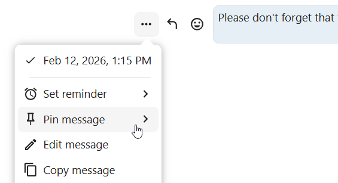
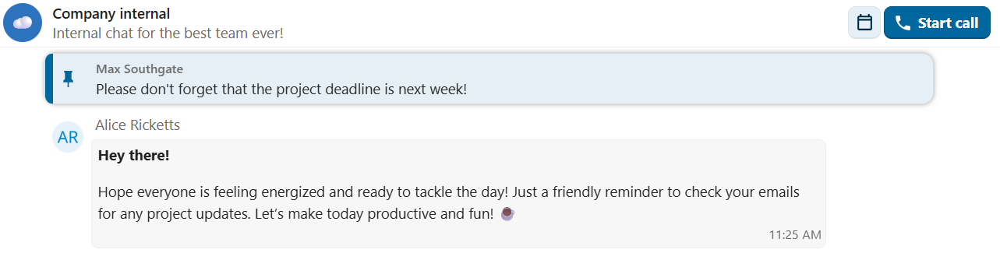
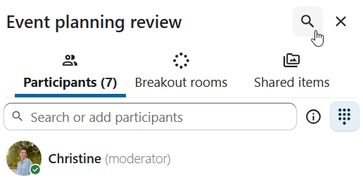
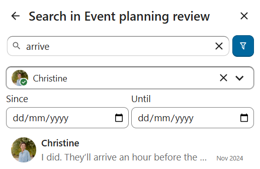

Interacting with messages
Editing messages
You can edit messages and captions to file shares up to 6 hours after sending.

Pinning messages
A moderator can pin important messages in a conversation, for a certain period of time or until it’s no longer relevant.
{kind=link}

Pinned messages are highlighted and accessible above the chat or in the Shared items tab of the content sidebar. If you no longer need a pinned message, you can unpin it for everyone or only yourself from quick actions.
{kind=link}

Setting reminder on messages
You can set reminders on specific messages. If there’s an important message you want to be notified about later, simply hover over it and click on the reminder icon.

In the submenu, you can select an appropriate time to receive a notification later.

You can also forward a message to another conversation using the ... menu, or send it to your Note to self conversation for personal reference.
Messages search in a conversation
In addition to global unified search, you can search for messages within a specific conversation. In the content sidebar of a conversation, click the search icon to open the search tab.
{kind=link}

You can narrow down your search by using filters such as date range, and sender.
{kind=link}

Threaded messages
You can create threads in conversations to keep discussions organized. The thread creation option is available in the new message additional actions.

Then, you can add a title and description for the thread and start the discussion.

You can view all replies in a thread either from the replies button on the message or from Shared items tab in the content sidebar.

You can subscribe to a thread to receive notifications about new replies. It is possible to subscribe from the thread itself or from the sidebar.

Subscribed threads are easily accessible from the navigation bar in Threads navigation.

You can edit the thread title from the thread itself or from the sidebar.